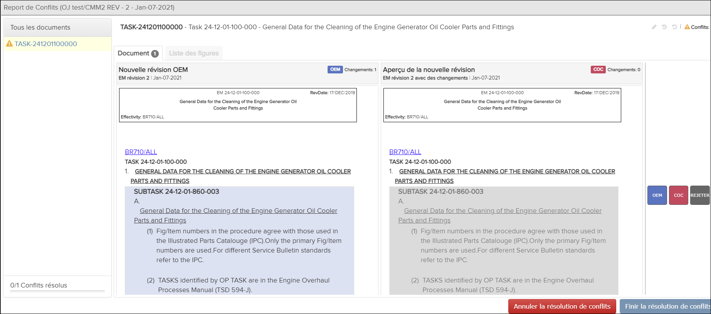
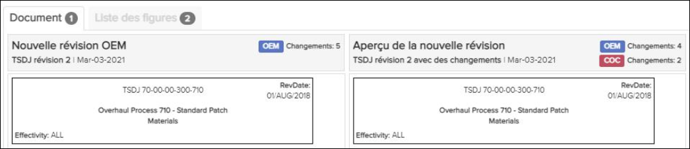
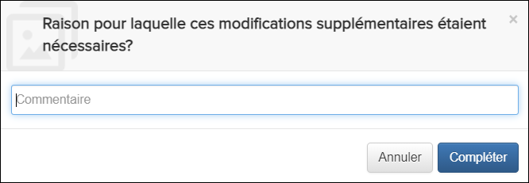
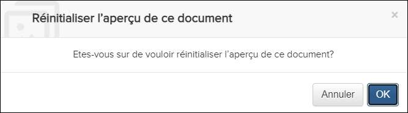
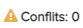

Non applicable pour Pinpoint Standalone Light.
Les utilisateurs doivent disposer des autorisations pour le privilège Peut fusionner de nouvelles révisions pour afficher un rapport de fusion et résoudre les conflits.

Report de Conflits
- Le panneau Tous les documents le plus à gauche montre tous les documents avec des changements dans la révision. L'icône sur le document affiche une icône d'avertissement pour les documents contenant des conflits. Le pied de page de ce panneau répertorie un pourcentage global de documents résolus par rapport aux documents en conflit.
- Le panneau principal affiche le document actuellement sélectionné, qui est
par défaut le premier de la liste. Ce panneau affiche une vue côte à côte du
contenu du document ou de la liste des figures, selon l'onglet
sélectionné.Le numéro indiqué dans l'onglet Document ou Liste des figures du panneau principal indique le nombre de conflits dans le document ou les figures. Par exemple, il y a un conflit dans ce document:

Document et Onglets Liste des figures
Le côté gauche du panneau principal montre la nouvelle révision OEM . Le côté droit montre l'aperçu de la nouvelle révision OEM avec les modifications COC ajoutées.
- L'extrême droite du panneau affiche les actions disponibles pour chaque section du document.
- La partie supérieure droite de l'écran a ces icônes:
 Ajouter des modifications supplémentaires à ce
document icône
Ajouter des modifications supplémentaires à ce
document icôneCette option est disponible lorsque tous les conflits des documents actuels sont résolus. Vous pouvez apporter des modifications supplémentaires au contenu de droite avant de terminer la fusion. Ceci est utile lorsque vous souhaitez résoudre un conflit en utilisant OEM ou COC, mais également copier du contenu à partir de la version non sélectionnée. Par exemple, vous souhaiterez peut-être conserver votre version COC mais copier les modifications OEM dans la version COC .
Lorsque vous sélectionnez cette option, ce message de confirmation apparaît:
Entrez la raison des modifications supplémentaires dans le champ Commentaire et cliquez sur le bouton .Remarque : Le contenu saisi dans le champ Commentaire est visible par les auditeurs dans la boîte de dialogue Historique des conflits. Faire référence à Audit de fusion. Historique des conflits icône
Historique des conflits icôneCette option est disponible après toute action de fusion et permet à un auditeur d'afficher toutes les actions de fusion pour le document actuel. Faire référence à Audit de fusion.
 Réinitialiser l'aperçu de ce document
icône
Réinitialiser l'aperçu de ce document
icôneCette option est disponible après toute action de fusion et restaure le document de droite à son état initial. Toutes les actions de fusion sont supprimées et l'historique de fusion effacé pour le document.
Lorsque vous sélectionnez cette option, ce message de confirmation apparaît:

Cliquez sur le bouton pour réinitialiser le document à son état initial.
icône / champCette icône / champ indique le nombre total de sections, figures ou feuilles en conflit dans le document actuel.
-
Cliquez sur le bouton
 .
Un message de réussite apparaît. Une icône
.
Un message de réussite apparaît. Une icône remplace les boutons de conflit sur le côté droit
du rapport.Remarque : Si vous survolez l'icône, elle se transforme en icône
remplace les boutons de conflit sur le côté droit
du rapport.Remarque : Si vous survolez l'icône, elle se transforme en icône
 Annuler les modifications. Cliquez sur l'icône pour
revenir à la résolution de conflit précédemment sélectionnée. Les options de
résolution réapparaissent. Vous pouvez sélectionner une option pour modifier
la résolution des conflits.
Annuler les modifications. Cliquez sur l'icône pour
revenir à la résolution de conflit précédemment sélectionnée. Les options de
résolution réapparaissent. Vous pouvez sélectionner une option pour modifier
la résolution des conflits.Reportez-vous à Annuler ou terminer la fusion pour plus d'informations sur l'annulation ou la finalisation de la fusion.